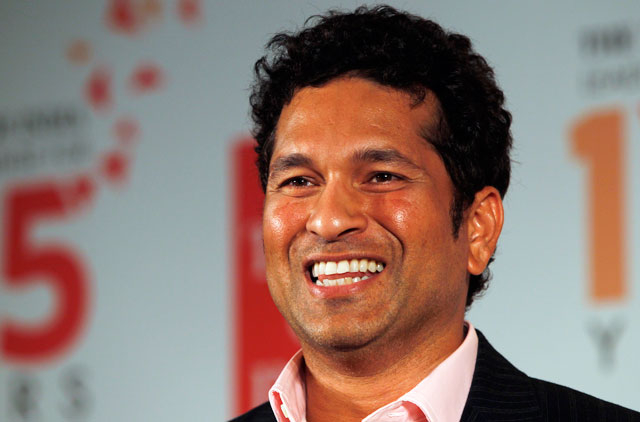

Sachin Tendulkar is a former international cricketer from India and is widely regarded as one of the greatest batsmen in the history of cricket.
Sachin Tendulkar had an illustrious career spanning 24 years, during which he represented the Indian national cricket team.
He holds numerous records and achieved numerous milestones throughout his career.